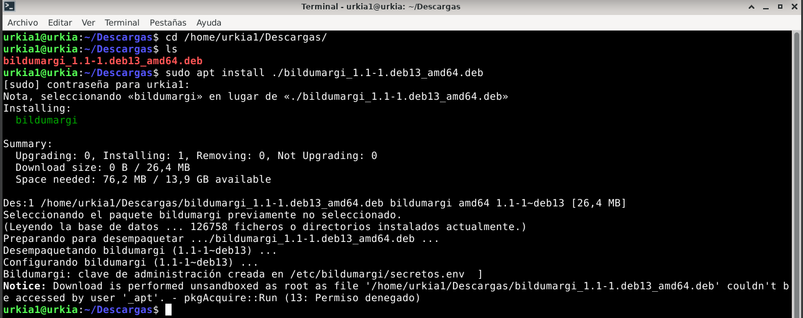
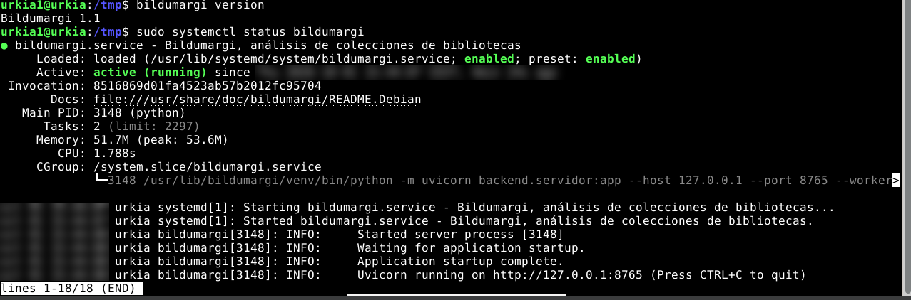
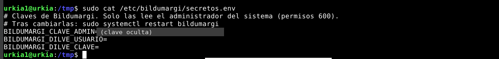
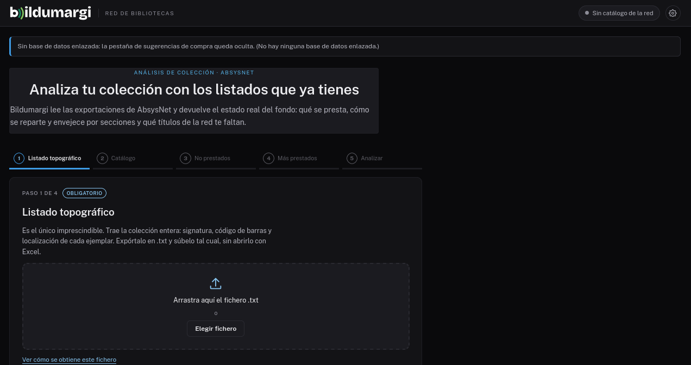
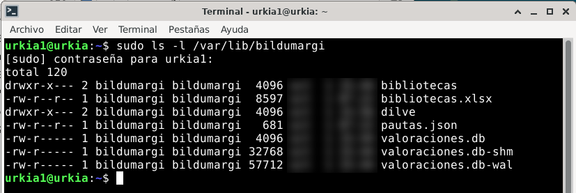
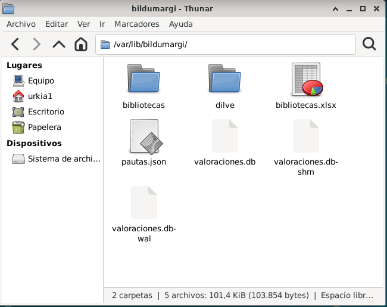

Instalar en un servidor Linux¶
Para Debian 12, Debian 13 y Ubuntu 24.04 hay un paquete .deb que
instala Bildumargi como un servicio más del sistema: arranca solo, se
actualiza con apt y guarda los datos aparte del programa.
Esta guía usa Debian 13. En las otras dos distribuciones los pasos son los mismos; solo cambia el paquete.
1. Comprueba qué sistema tienes¶
Cada distribución tiene su propio paquete, porque cada una trae una versión
distinta de Python. Si instalas el de otra, apt se niega con un error como
«Depende: python3.12 pero no es instalable».
cat /etc/os-release
Si PRETTY_NAME dice… |
Paquete que necesitas (termina en…) |
|---|---|
| Debian GNU/Linux 12 (bookworm) | deb12_amd64.deb |
| Debian GNU/Linux 13 (trixie) | deb13_amd64.deb |
| Ubuntu 24.04 LTS | ubuntu24.04_amd64.deb |
En los comandos de abajo, sustituye deb13 por lo que te corresponda.
2. Descarga el paquete¶
Descárgalo en /tmp. Si lo descargas en tu carpeta personal también
funciona, pero apt muestra un aviso de «Permiso denegado» (ver el paso 3).
cd /tmp
URL=$(wget -qO- https://api.github.com/repos/96urkia/bildumargi/releases/latest | grep -o 'https://[^"]*deb13_amd64.deb')
echo $URL
wget "$URL"
wget https://github.com/96urkia/bildumargi/releases/latest/download/SHA256SUMS
La segunda línea pregunta a GitHub cuál es la última versión y guarda la
dirección del paquete; echo la muestra para comprobarla. También puedes
descargarlo desde el navegador, en la
página de versiones.
Comprueba que el fichero ha llegado entero. Los dos códigos deben ser iguales:
sha256sum bildumargi*deb13*.deb
grep deb13 SHA256SUMS
Por qué el nombre lleva un punto
El paquete se llama, por ejemplo, bildumargi_1.1-1.deb13_amd64.deb.
GitHub cambia la ~ del nombre original por un punto al publicarlo. Por
eso los comandos usan comodines (bildumargi*deb13*.deb), que valen para
cualquier versión.
3. Instala¶
sudo apt install ./bildumargi*deb13*.deb
apt instala Bildumargi y lo que necesita (Python y sus librerías), crea un
usuario propio para el servicio, genera una clave de administración y deja
Bildumargi arrancado.

Las líneas que importan son «Configurando bildumargi» y «clave de administración creada en /etc/bildumargi/secretos.env».
El aviso «Notice: … Permiso denegado»
Sale si el paquete está en tu carpeta personal, como en la captura. apt
descarga con un usuario restringido que no puede leer esa carpeta, así que
lo hace como administrador y lo avisa. La instalación es correcta. Para
que no salga, instala desde /tmp.
4. Comprueba que funciona¶
bildumargi version
sudo systemctl status bildumargi
Debe responder Bildumargi 1.1 y mostrar active (running) en verde. Pulsa Q para salir.

La última línea indica dónde escucha: http://127.0.0.1:8765, es decir, solo
desde el propio servidor. Para abrirlo desde otros equipos, ver el paso 8.
5. Apunta la clave de administración¶
sudo cat /etc/bildumargi/secretos.env

La clave de administración sirve para entrar en Administración de la red. Guárdala en un sitio seguro. Las dos líneas de DILVE se rellenan en el paso 7.
6. Ábrelo¶
En el navegador del servidor, abre http://127.0.0.1:8765. Aparece el
asistente de carga:

El aviso de arriba («Sin base de datos enlazada») es normal mientras no se conecte el catálogo colectivo de la red: el análisis de la colección propia funciona igualmente.
7. Configura los datos de la red¶
Dónde está cada cosa¶
| Qué | Dónde |
|---|---|
| El programa (no se modifica) | /usr/lib/bildumargi |
| Ajustes: dirección, puerto, carpeta de datos | /etc/bildumargi/bildumargi.env |
| Claves: administración y DILVE | /etc/bildumargi/secretos.env |
| Datos: directorio, valoraciones, historial, DILVE | /var/lib/bildumargi |
| Mensajes del programa | journalctl -u bildumargi |
La carpeta de datos pertenece al usuario del servicio y está protegida,
porque contiene las claves de las bibliotecas y las valoraciones de la red.
Para ver lo que hay dentro hace falta sudo:
sudo ls -l /var/lib/bildumargi

El directorio de bibliotecas¶
El paquete trae una plantilla de bibliotecas.xlsx con tres filas de
ejemplo. Hay que sustituirla por el directorio de la red (ver
Directorio de bibliotecas). Hay dos formas de editarlo.
sudo cp /var/lib/bildumargi/bibliotecas.xlsx ~/
sudo chown $USER: ~/bibliotecas.xlsx
Edítalo con LibreOffice Calc y guárdalo en formato Excel («Usar formato Excel 2007-365»). Después, devuélvelo:
sudo cp ~/bibliotecas.xlsx /var/lib/bildumargi/
sudo chown bildumargi:bildumargi /var/lib/bildumargi/bibliotecas.xlsx
Añade tu usuario al grupo del servicio y da permisos al grupo:
sudo usermod -aG bildumargi $USER
sudo chmod 2770 /var/lib/bildumargi
sudo chmod 660 /var/lib/bildumargi/bibliotecas.xlsx
Cierra la sesión y vuelve a entrar. Desde entonces puedes abrir la carpeta en el gestor de archivos y editar el Excel directamente:

Warning
Con este permiso, tu usuario puede ver y modificar todos los datos de Bildumargi. Solo debe tenerlo quien administre la red.
En los dos casos no hace falta reiniciar: Bildumargi relee el directorio en cuanto cambia.
Las credenciales de DILVE (opcional)¶
sudo nano /etc/bildumargi/secretos.env
Rellena las dos líneas, sin espacios alrededor del =:
BILDUMARGI_DILVE_USUARIO=vuestro_usuario
BILDUMARGI_DILVE_CLAVE=vuestra_contraseña
Guarda con Ctrl+O y Enter, sal con Ctrl+X y reinicia:
sudo systemctl restart bildumargi
Más detalles en DILVE.
8. Publícalo en la red¶
Bildumargi escucha solo en el propio servidor. Para que lo usen las bibliotecas, se publica detrás de nginx, que no se instala solo:
sudo apt install -y nginx
El paquete trae un ejemplo con HTTPS, que es lo recomendable en una red real:
/usr/share/doc/bildumargi/ejemplos/nginx-bildumargi.conf. Cópialo a
/etc/nginx/sites-available/bildumargi, pon el nombre del servidor y la ruta
del certificado, y actívalo:
sudo ln -s /etc/nginx/sites-available/bildumargi /etc/nginx/sites-enabled/
sudo rm -f /etc/nginx/sites-enabled/default
sudo nginx -t && sudo systemctl reload nginx
nginx -t debe responder «syntax is ok» y «test is successful».
Configuración mínima sin certificado (solo para pruebas)
server {
listen 80 default_server;
server_name _;
client_max_body_size 100M;
proxy_read_timeout 600s;
location / {
proxy_pass http://127.0.0.1:8765;
proxy_set_header Host $host;
proxy_set_header X-Forwarded-For $proxy_add_x_forwarded_for;
proxy_set_header X-Forwarded-Proto $scheme;
}
}
Reiniciar y consultar el servicio¶
| Para | Orden |
|---|---|
| Ver si está en marcha | sudo systemctl status bildumargi |
| Reiniciarlo | sudo systemctl restart bildumargi |
| Ver sus mensajes | journalctl -u bildumargi -n 50 |
| Ver la versión | bildumargi version |
| Generar la base del catálogo | sudo bildumargi conversor fichero.mrc |
Hay que reiniciar al cambiar secretos.env o bildumargi.env. No hace
falta al cambiar bibliotecas.xlsx. Bildumargi arranca solo con el sistema.
Probarlo en una máquina virtual¶
Instalación de prueba con VirtualBox
Para conocer el proceso antes de instalarlo en el servidor de la red:
- Descarga Debian 13 (imagen netinst) y crea una máquina con 2 GB de RAM y 20 GB de disco. Marca «Omitir instalación desatendida».
- En el instalador, deja vacía la contraseña de root: así el usuario
que crees podrá usar
sudo. - Con escritorio, puedes hacerlo todo dentro de la máquina, como en las
capturas de esta página. Sin escritorio, como un servidor real, añade en
VirtualBox Red → Avanzado → Reenvío de puertos las reglas
2222 → 22(SSH) y8080 → 80(web). Después conéctate desde Windows conssh -p 2222 TU_USUARIO@localhost, con el usuario que creaste al instalar. - Si la pantalla de la máquina es pequeña, la interfaz queda justa. Sube la resolución en Debian o instala las Guest Additions de VirtualBox.